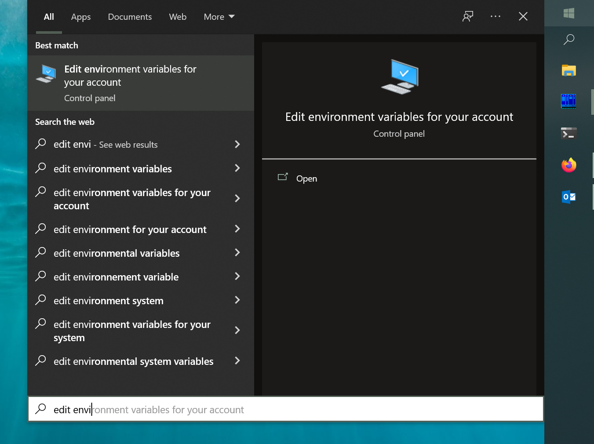

Installation
Overview
Install the following PDS Registry command-line tools:
Registry Manager — creates and manages Registry indices, data, and LDDs in OpenSearch.
Harvest — extracts metadata from PDS4 labels and loads it into PDS Registry.
Registry Client — handles authentication and request signing for OpenSearch API queries.
Prerequisites
Java
Harvest, Registry Manager, and API Server require Java 17–25. Java 8 and 11 are not supported.
Check whether a supported version is already installed:
java -versionExpected output (version number may vary):
java 25 2025-09-16 LTS Java(TM) SE Runtime Environment (build 25+37-LTS-3491) Java HotSpot(TM) 64-Bit Server VM (build 25+37-LTS-3491, mixed mode, sharing)
Note
Your system might have multiple versions of Java installed, for example, JDK 11 and JDK 25. If JDK 25 is not the default, then set JAVA_HOME environment variable to point to JDK 25 before running Harvest or Registry Manager.
If a supported version is not installed, download and install OpenJDK (recommended) from one of:
Most Linux distributions include OpenJDK in their standard package repositories.
Alternatively, Oracle JDK is available at oracle.com (requires registration and license acceptance).
Python
Registry Client requires Python 3.13 or higher.
Check your Python version:
python3 --versionIf Python 3.13+ is not installed, follow the installation guide on GitHub Discussions.
Tools
Registry Manager
Download the latest stable release from https://github.com/NASA-PDS/registry-mgr/releases/latest. Choose the tar.gz (Linux/macOS) or zip (Windows).
Extract to a directory with no spaces in the path (e.g.
/home/pds):Linux / macOS:
tar -xzvf registry-manager-x.y.z-bin.tar.gz
Windows: Right-click the zip and select Extract All.
Configure environment variables as described in Configure Your Environment.
Verify the installation:
registry-manager --help
Harvest
Download the latest stable release from https://github.com/NASA-PDS/harvest/releases/latest. Choose the tar.gz (Linux/macOS) or zip (Windows).
Extract to a directory with no spaces in the path (e.g.
/home/pds):Linux / macOS:
tar -xzvf harvest-x.y.z-bin.tar.gz
Windows: Right-click the zip and select Extract All.
Configure environment variables as described in Configure Your Environment.
Verify the installation:
harvest --help
Registry Client
Follow the installation steps in the Registry Client documentation.
Configure Your Environment
Note
Optional but recommended. Without this step, run tools directly from the bin/ directory of each downloaded package.
Linux / macOS:
Open your shell profile file (e.g.
~/.bash_profile,~/.zshrc).Add the following, updating each path to match your installation directories:
HARVEST_HOME=/path/to/harvest-x.y.z HARVEST_CLIENT_HOME=/path/to/registry-client-x.y.z REGISTRY_HOME=/path/to/registry-manager-x.y.z export PATH=${PATH}:$HARVEST_HOME/bin:$REGISTRY_HOME/bin:$HARVEST_CLIENT_HOME/bin
Reload your profile:
source ~/.bash_profile
Windows:
Open the Start Menu and search for environment.
Select Edit environment variables for your account.

In the Environment Variables dialog, edit the
Pathvariable.Add the
bindirectory for each installed tool (Harvest, Registry Manager, etc.).